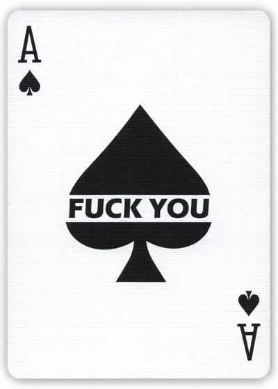

Fuck you Playing Cards
Fuck you Playing Cards, the main Idea behind the design was to incorporate it with magic to deal
with hecklers or as a prank. But I realized that it can be also perfect for Cardistry because of
its minimal design, and its scribbled shaped background.The back design got a minimal look which
is perfect for both Magic and Cardistry. It's very funny and stylish!


Cards: 55
Stock: Luxury
Finish: Legendary
Designed by Fuck you